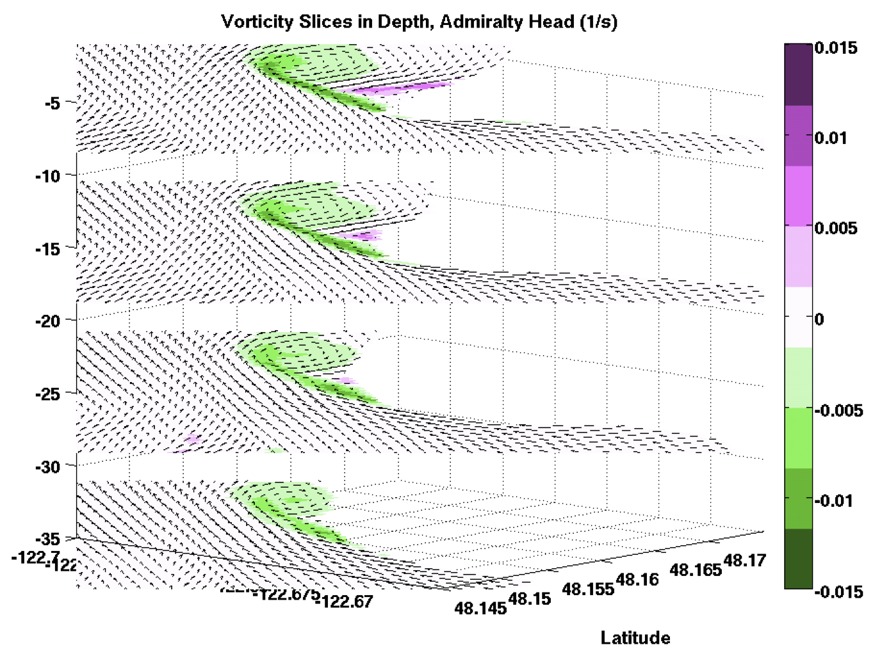

Research
I am interested in coastal physics and renewable energy resources together with computational mathematics and numerical modeling. I have been using the Regional Ocean Modeling System ROMS, among other codes, for several years now to do ocean modeling.
I am currently a Postdoctoral Research Associate with Rob Hetland in the Physical Oceanography Numerical Group at Texas A&M in the Department of Oceanography.
I completed my PhD at the University of Washington in Mechanical Engineering with Jim Riley as my advisor. This work was completed as part of the Northwest National Marine Renewable Energy Center (NNMREC) at the University of Washington, funded by the Department of Energy, in which UW has a focus on tidal hydrokinetic energy.
I am interested in topics related to open science and reproducibility, and am involved in the Scientific Python community. Much of my work is available online through my github page.
Particle Tracking
 As part of the Gulf Integrated Spill Research (GISR) consortium, we have wrapped the particle tracking code TRACMASS in Python to make it easy to utilize with our model output, and by other researchers. We call this wrapped code system TracPy.
As part of the Gulf Integrated Spill Research (GISR) consortium, we have wrapped the particle tracking code TRACMASS in Python to make it easy to utilize with our model output, and by other researchers. We call this wrapped code system TracPy.
TRACMASS steps drifters forward natively on a staggered and structured numerical grid. Because the algorithm conserves mass, the drifters can be used to represent the transport of water parcels or other materials.
TracPy version 1.0 has been released with a DOI. 
Shelf Connectivity
What material can reach the Texas-Louisiana shelf from off-shore to potentially impact the coastline, or from near-shore to exit toward the deep Gulf of Mexico, is controlled by whether it can cross the shelf. Therefore, understanding more about the processes that control this crossing and connectivity between areas can tell us about the areas of largest potential impact from an oil spill, for example.
Using drifter tracks run in TracPy, we are examining this connectivity in space as well as in time to understand the areas of large and small cross-shelf transport and how they change seasonally and inter-annually.
Shelf Dispersion Statistics
By combining the information together from many numerical drifter tracks, we can understand a system from a perspective that is oriented toward transport specifically. Metrics run on these drifters, such as absolute and relative dispersion and the finite scale Lyapunov exponent, can help us infer many attributes of the flow fields that can be difficult to assess otherwise, such as the nature of the turbulence.
Harmful Algal Bloom Modeling
 Harmful algal blooms (specifically red tides, in this research) occur periodically in the fall in Texas waters and can cause respiratory problems in fishermen and boaters and shut down recreation and shellfish harvesting in the affected areas. Biological effects alone do not adequately explain the rapidity with which harmful algal bloom events can occur. However, some recent research indicates that the circulation of the northern Gulf of Mexico can help to explain the occurrences.
Harmful algal blooms (specifically red tides, in this research) occur periodically in the fall in Texas waters and can cause respiratory problems in fishermen and boaters and shut down recreation and shellfish harvesting in the affected areas. Biological effects alone do not adequately explain the rapidity with which harmful algal bloom events can occur. However, some recent research indicates that the circulation of the northern Gulf of Mexico can help to explain the occurrences.
Recent work with Rob Hetland, in collaboration with Lisa Campbell, is focused on better understanding the source of harmful algal blooms off the Texas coastline using a numerical model of the Texas and Louisiana shelf waters.
Thyng, K. M., Hetland, R. D., Ogle, M. T., Zhang, X., Chen, F., & Campbell, L. (2013). Origins of Karenia brevis harmful algal blooms along the Texas coast. Limnology & Oceanography: Fluids & Environments}, 3, 269-278. DOI: 10.1215/21573689-2417719. link
Texas-Louisiana Shelf Modeling
Lagrangian tracking work is being done in the northwestern Gulf of Mexico using output from a numerical model of the Texas-Louisiana shelf. The model is run using ROMS. More information is available on my group website. New movies of the surface salinity are available.
Drifter Monitoring
 We are helping to monitor drifters in the Gulf of Mexico from Chinese researchers, particularly Dongliang Yuan at the Chinese Acadamy of Sciences, Institute of Oceanology in Qingdao.
We are helping to monitor drifters in the Gulf of Mexico from Chinese researchers, particularly Dongliang Yuan at the Chinese Acadamy of Sciences, Institute of Oceanology in Qingdao.
The drifter locations are updated on the plot once a day. This data will be used in the future to compare with numerical model output. A larger version of this image is available
Headland-Generated Tidal Vorticity

Tidal headland-generation vortices are strong, consistent features in the flow through Admiralty Inlet, the main entrance channel to the Puget Sound. In particular, eddies dominate the flow field near Admiralty Head, a large headland in the Inlet, and affect transport, turbulence, and currents in the area. The vorticity generated at the headland has complex dynamics, as it interacts with eddies generated on previous tides, is tilted between horizontal and vertical directions, is stretched and contracts, and is generated at the bathymetry and coastline.
Turbulence Modeling
The Regional Ocean Modeling System (ROMS) is a Reynolds-Averaged Navier-Stokes ocean model and uses a two-equation turbulence closure scheme for subgrid-scale parameterization. While it is commonly used for modeling regions around the world, the turbulence fields have not often been compared directly with field data. In this work with Jim Riley, in collaboration with Jim Thomson, Reynolds stress, turbulent kinetic energy, and turbulent dissipation rate as predicted by a numerical model of Admiralty Inlet in the Puget Sound are compared with field data.
Thyng, K. M., Riley, J. J., & Thomson, J. (2013). Inference of turbulence parameters from a ROMS simulation using the k-ε closure scheme. Ocean Modelling, 72(C), 104--118. doi:10.1016/j.ocemod.2013.08.008. pre-print link
Tidal Hydrokinetic Energy
The existing physical environment in an area of interest for tidal hydrokinetic energy must be understood and evaluated to estimate the magnitude and timing of power that may be extractable, as well as associated issues that may affect how easily extractable that power may be. In order to begin addressing questions like these in Admiralty Inlet, Puget Sound, a numerical model was run and output was analyzed to calculate various metrics representing pertinent tidal energy extraction issues.
Thyng, K. M., & Riley, J. J. (2010, September). Idealized headland simulation for tidal hydrokinetic turbine siting metrics. In OCEANS 2010 (pp. 1-6). IEEE.
Turbine Modeling in Realistic Flows
Tidal hydrokinetic energy has the potential to provide cities near strong tidal currents with clean, sustainable, renewable energy. However, the interplay between turbines in the flow and the flow itself are not well understood. Before placing arrays of turbines in the water, models should be run to help anticipate the effects of the devices. In a collaboration with Thomas Roc, formerly at University of Plymouth and currently at ITP Offshore Consulting, a turbine model in ROMS is implemented in an idealized but realistic simulation. Animations of these simulations are available.
Roc, T., Greaves, D., Thyng, K. M., & Conley, D. (2013). Tidal turbine representation in an ocean circulation model: Towards realistic applications. Ocean Engineering (accepted).
Thyng, K. M. & Roc, T. (2013). Tidal current turbine power capture and impact in an idealised channel simulation. Proceedings European Wave and Tidal Energy Conference. Aalborg, Denmark.
Roc, T., Thyng, K. M., & Conley, D. (2011). Applying a numerical decision-making tool for tidal current turbine (TCT) planning projects to the Puget Sound estuary - Early Results. Proceedings European Wave and Tidal Energy Conference. Southampton, UK.
Admiralty Inlet and the Puget Sound
The Puget Sound is a fjord-like estuary in western Washington near several large cities including Seattle. It is a complex area with many demands on it, ecologically and from the metropolitan areas, and issues including hypoxic waters are regular concerns. Simulations have been run of the Puget Sound (using SUNTANS), and of Admiralty Inlet, the main entrance channel to the Puget Sound (using ROMS).
This high resolution model of Admiralty Inlet was one-way nested in a large regional model of the NE Pacific Ocean and Salish Sea, a modeling effort called MoSSea in Parker MacCready's group in the School of Oceanography at UW. Many interesting features have been noted and studied that are present in Admiralty Inlet, including strong headland-generated vortices, high levels of turbulence, strong horizontal density gradients established by the tidal flows and leading to fronts, and complicated flow fields.
Animations of the Admiralty Inlet simulation can be found here.
Thyng, K. M., Riley, J. J., & Thomson, J. (2013). Inference of turbulence parameters from a ROMS simulation using the k-ε closure scheme. Ocean Modelling, 72(C), 104--118. doi:10.1016/j.ocemod.2013.08.008.
Thyng, K. M. (2012). Numerical Simulation of Admiralty Inlet, WA, with Tidal Hydrokinetic Turbine Siting Application (Doctoral dissertation).
Kawase, M., & Thyng, K. M. (2010). Three-dimensional hydrodynamic modelling of inland marine waters of Washington State, United States, for tidal resource and environmental impact assessment. Renewable Power Generation, IET, 4(6), 568-578. doi:10.1049/iet-rpg.2009.0195.